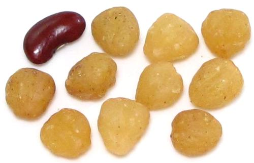

Njangsa

[Djansang, Essessang, Essang, Ezezang, Njasang (Cameroon); Munguella
(Angola); Bofeko (Zaire); Wama (Ghana); Okhuen (Nigeria); Kishongo
(Uganda); Akpi (Côte d'Ivoire); Ricinodendron heudelotii var
heudelotii (Ghana); var africanum (Nigeria)]
This large tree, growing to about 160 feet, is native to tropical Africa
from Senegal east to Tanzania and south to Angola and Mozambique. It is
also found on Madagascar. The part used for food is the seed kernel. The
kernels are ground and used as a flavoring thickener. They are also pressed
for oil. Both male and female trees must be present to produce fruit. The
center for seed kernel production is Cameroon. These seed kernels are used
primarily in West Africa and Central Africa.
When the fruit is ripe, it falls from the trees and is gathered from
the ground, then left in big piles to rot. When they have rotted, the
seeds, about 0.6 inch diameter, are separated out by washing and
boiling the fruit. The seeds are then soaked overnight in cold water.
They are then boiled again until the shells crack. The shells are
removed using a knife, and the seed kernels are set out to
dry.
More on Spurges.
Buying:
I have purchased these on-line under the
name Djansang for 2018 US $3.50 per ounce, product of Cameroon.
Cooking:
Njangsa are pounded to paste before including
in recipes, since their main purpose is both as a flavoring and
thickener. They are put in when there will still be a fair amount of
cooking time to develop their thickening properties
Subst:
These taste similar to Southeast Asian
Candlenuts, another spurge, but are a
bit stronger and more resinous. Candlenuts are used very similarly.
sr_njangz 180803 www.clovegarden.com
© Andrew Grygus - agryg@clovegarden.com - Photos on
this page not otherwise credited are ©
cg1.- Linking to and non-commercial use of
this page permitted.